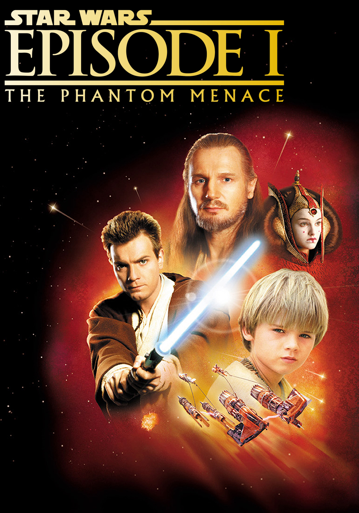
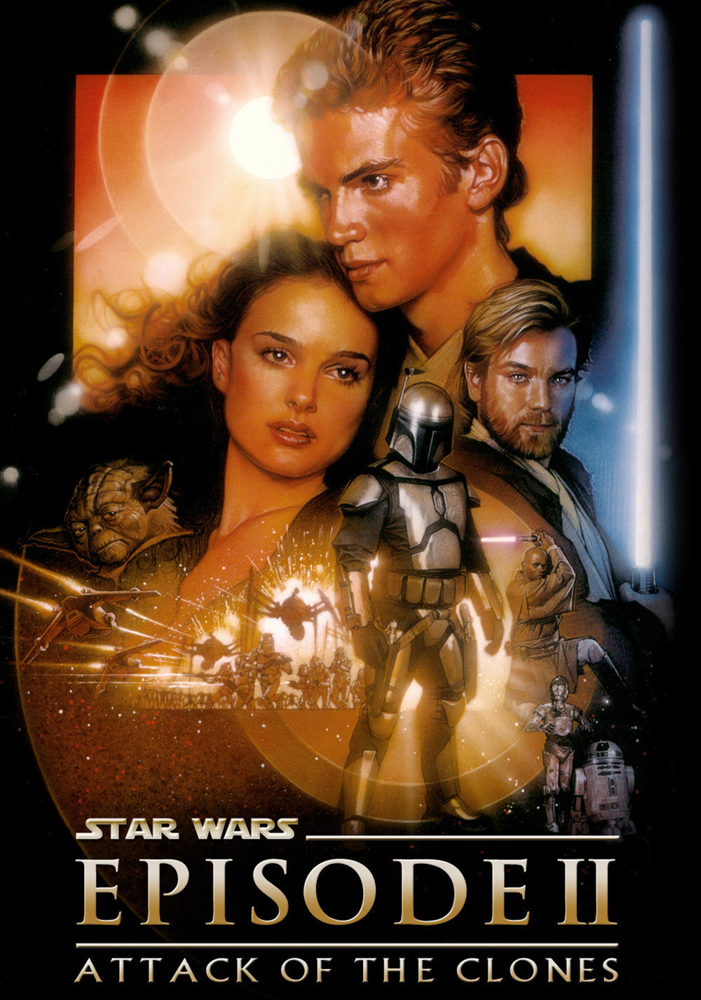
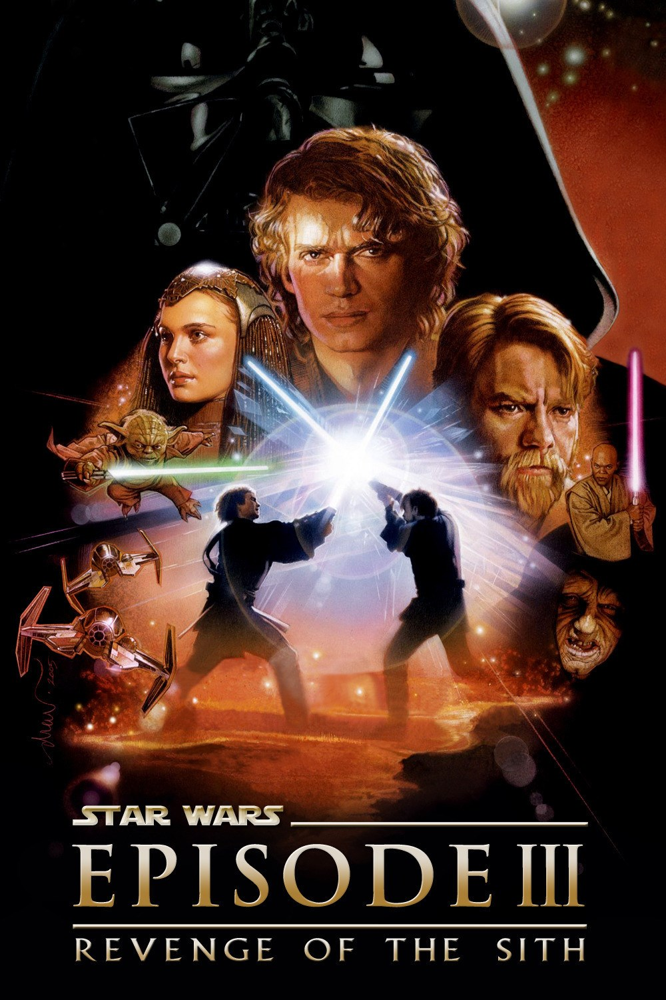
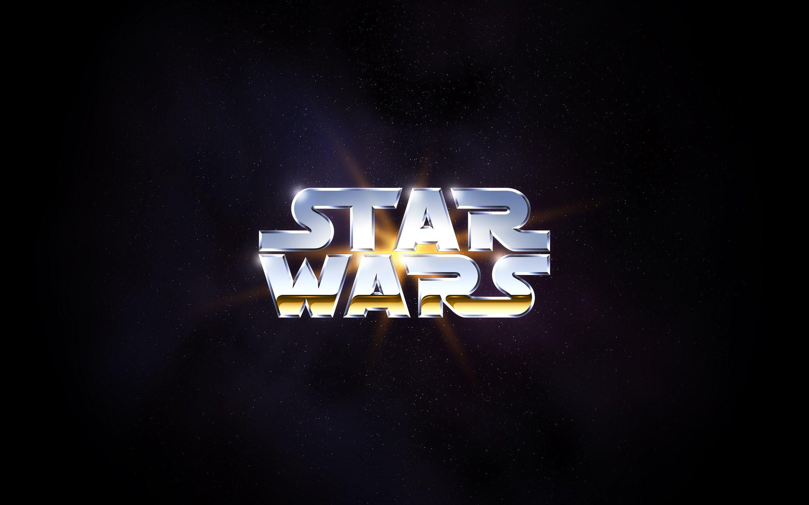

The Star Wars prequel trilogy follows the events of Obi-Wan and Anakin Skywalker through their journey across the galaxy. Anakin is deemed to be the chosen one, he is trained by Obi-Wan Kenobi in hopes that Anakin can fulfill the prophecy and bring balance to the force.



Synopsis
Star Wars Episode I: The Phantom Menace
The opening crawl reveals that the Trade Federation, led by its Viceroy Nute Gunray, has blockaded the planet of Naboo in hope of resolving a galactic trade dispute. Chancellor Valorum (Terence Stamp) of the Galactic Republic, sends Jedi Knights Qui-Gon Jinn (Liam Neeson) and his apprentice Obi-Wan Kenobi (Ewan McGregor) on a secret mission to meet with the Trade Federation to settle the crisis. Unknown to them, the Trade Federation is in league with the mysterious Sith Lord Darth Sidious, who orders them to invade Naboo with their immense droid army and also to kill the two Jedi. Following a failed attempt to force their way into Gunray's command center, Qui-Gon and Obi-Wan escape and flee to the surface of Naboo, where they meet local Gungan outcast Jar Jar Binks (Ahmed Best). As Jar Jar brings them to an underwater Gungan settlement, the Trade Federation captures Naboo's leader, Queen Amidala (Natalie Portman). Through a Jedi mind trick, Qui-Gon secures a submarine, which he, Obi-Wan, and Jar Jar use to reach the capital of Naboo and rescue Queen Amidala and her escort. The group departs for Coruscant, the Galactic Republic's capital planet, to seek help from the Senate.
During the escape, the ship is attacked by the Federation blockade, forcing R2-D2, one of the ship's droids, to fix the shields. The attack damages the ship's hyperdrive, forcing the party to land on the desert planet of Tatooine for repairs. While searching for needed parts, Qui-Gon and a handmaiden named Padmé befriend young Anakin Skywalker (Jake Lloyd), a nine-year-old human slave gifted in piloting and mechanics. Qui-Gon senses a strong presence of the Force in Anakin, and feels that he may be the "Chosen One" an individual the Jedi believe will fulfill a prophecy by bringing balance to the Force. At Anakin's insistence, Qui-Gon enters Anakin into the Boonta Eve Podrace in a bid with Anakin's master, Watto, to gain the needed parts as well as Anakin's freedom. Anakin eludes several obstacles including rival racer Sebulba to win the race, gaining his freedom and bankrupting Watto. After hesitation, Anakin leaves his mother and his droid, C-3PO (Anthony Daniels), behind on Tatooine to go with the Jedi. As the group prepares to depart, they are attacked by the Sith apprentice Darth Maul (Ray Park), who battles Qui-Gon until the heroes escape.
On Coruscant, Qui-Gon informs the Jedi Council of the mysterious, well-trained attacker. The Council becomes concerned that this may indicate the reappearance of the Sith, an opposing order that followed the dark side of the Force and had long ago disappeared. Qui-Gon informs the Council about Anakin, hoping that he can be trained as a Jedi. After testing the boy the Council refuses, worried that he is too old for training and that the fear and anger that he harbors will cloud his future. Meanwhile, Senator Palpatine (Ian McDiarmid) of Naboo persuades Amidala to call a vote of no confidence in Chancellor Valorum. The vote removes Valorum from power and leads to Palpatine's nomination for the position, which Amidala considers too late to be effective. To stop the Federation invasion by herself, the Queen decides to return to Naboo with her security team, the two Jedi, R2-D2, Anakin, and Jar Jar.
On Naboo, Padmé reveals herself as Queen Amidala and forms an alliance with the Gungans for the battle against the Trade Federation. The Gungans march into battle to divert the Federation army away from the capital, allowing the others to infiltrate the palace. Once inside the palace hangar, the Jedi free several Naboo pilots, who regain their starfighters and assault the Federation droid ship. As they make their way to the throne room, the infiltration team is confronted by Darth Maul. Qui-Gon and Obi Wan engage Maul while the others take an alternate route. Qui-Gon and Obi-Wan duel with the Sith Lord amongst the catwalks of a massive power-generating reactor core. Obi-Wan is briefly delayed, separating him from Qui-Gon and Maul. Meanwhile, Queen Amidala and her forces fight their way into the palace and capture Nute Gunray, Viceroy of the Trade Federation. Anakin - who inadvertently joined the dogfight in space - destroys the droid-control ship's reactor with proton torpedoes, which deactivates the droid army in the midst of taking Gungan prisoners. In the reactor core, Qui-Gon re-engages Darth Maul singlehandedly, but is mortally wounded. Obi-Wan catches up with and defeats Maul in another intense lightsaber battle. With his final breath, Qui-Gon instructs Obi-Wan to train Anakin to become a Jedi.
In the aftermath, the newly elected Supreme Chancellor Palpatine congratulates Queen Amidala on her victory and promises to watch Anakin's career with great interest. Meanwhile, the Jedi Council promotes Obi-Wan to the level of Jedi Knight, and Yoda reluctantly accepts Obi-Wan's request to train Anakin as his padawan. During Qui-Gon's funeral, Mace Windu (Samuel L. Jackson) and Yoda (Frank Oz) agree that the person who killed Qui-Gon had to have been a Sith, but as the Sith are known to have only a master and an apprentice, they are unsure which was killed. A large celebration is held on Naboo to celebrate the world's liberation and the newborn alliance between the Naboo and the Gungans.
Star Wars Episode II: Attack of the Clones
The opening crawl reveals that the Galactic Republic is in crisis. A separatist movement, led by former Jedi Master Count Dooku (Christopher Lee), has threatened the peace. Senator Padmé Amidala (Natalie Portman), former Queen of Naboo, returns to the Galactic Senate to vote against the creation of an Army of the Republic. Upon her arrival at Coruscant, she narrowly escapes an assassination attempt, a bomb placed on her ship. As a result, Chancellor Palpatine (Ian McDiarmid) requests that she be put under the protection of Jedi Knight Obi-Wan Kenobi (Ewan McGregor) and his apprentice, Anakin Skywalker (Hayden Christensen).
That night, a bounty hunter named Zam Wesell makes another attempt on Padmé's life. She is then pursued by Anakin and Obi-wan, but is killed by a toxic dart from an armored assailant who flies away.
Following the attack on the Senator's Jedi Council assign Anakin the takes of escorting Padme back to Naboo for her own protection, while Obi-wan is assigned to find out more about the murder attempt. Though Padme objects to the request to go into hiding, she accepts at the request of the Supreme Chancellor. With her away, she assigns Jar Jar Binks (Ahmed Best) to represent her place in the Senate.
Obi-wan's investigation takes him to a friend named Dexter Jettster, who identifies the item that killed Zam as a Kamino Saber-Dart. Going to the Jedi Archive to find out information on Kamino, Obi-Wan is surprised when the planet does not show up in his search. Bringing this to Master Yoda's attention, it is surmised that someone erased the location from the archive memory banks.
Obi-Wan goes to the presumed location, and does find the planet, where he discovers that a secret clone army is being developed for the Republic. The Kaminoan Prime Minister tells him that this army was ordered some ten years ago by a Jedi Master named Sifo-Dyas, whom the Jedi Council believes to have been killed around the same time. A bounty hunter named Jango Fett (Temuera Morrison) had been hired to be the template for the clones. Obi-Wan meets Jango on Kamino, and believes that he is the killer he has been tracking. After unsuccessfully trying to capture Jango Fett, Obi-Wan places a tracking device on his ship and follows him to the planet of Geonosis.
Meanwhile, Anakin and Padmé spend time together on Naboo, and Anakin reveals his love for her. Padmé resists, explaining that it would be impossible for the two of them to be together; she is a respected Senator, and the Jedi Code forbids marriage or any other form of attachment. Anakin is soon troubled by dreams in which his mother, Shmi (Pernilla August), is in danger and dying. He asks Padmé to accompany him to Tatooine. Upon arriving, Anakin learns that his mother was sold by his former master to a moisture farmer who lives outside of Mos Esley. Anakin and Padame arrive at the Lars farm where he meets his stepbrother Owen and his fiancee Beru as well as his stepfather Kleg Lars, who married Shmi. Anakin learns that his mother had been kidnapped one month earlier by local Tusken Raiders. Anakin tracks her to a Tusken camp, where he finds her in poor condition, and within moments she dies in his arms. In a fit of rage, he slaughters the entire Tusken community. Anakin brings his mother's body back to her home, where her funeral is held.
On Geonosis, Obi-Wan learns that Count Dooku and Trade Federation Vicreoy Nute Gunray have built a new droid army and that Gunray has ordered the assassination of Padmé. Just before being captured, Obi-Wan relays this information to Anakin so that he can relay it to the Jedi Council on Coruscant. Once the Jedi learn of Dooku's army, Jedi Master Mace Windu (Samuel L. Jackson) leads a team to Geonosis. Meanwhile, Jar Jar Binks calls for Chancellor Palpatine to be given emergency powers, with which he can call the recently discovered clone army into battle.
Back on Geonosis, the manipulative Count Dooku tries to persuade Obi-Wan to join him, warning him that the Senate is secretly under the control of a mysterious Sith Lord by the name of Darth Sidious. Obi-Wan refuses to believe him, saying that the Jedi would have known if that were the case. Upon learning that Obi-Wan is in trouble, Anakin and Padmé go to Geonosis, but they are captured during their infiltration of a droid factory, despite Anakin's valiant efforts.
They join Obi-Wan in an arena-like complex where three huge creatures are unleashed on them for their execution. During their struggle, Mace Windu arrives with the Jedi, and they battle the droid army. Just as defeat for the Jedi seems imminent, Yoda arrives with the Republic's new clone army.
The Battle of Geonosis. A large battle erupts between the Republic's clone forces and the Separatists' droid army. Count Dooku attempts to escape, but Obi-Wan and Anakin track him to a secret hangar, where they engage him in combat. Dooku quickly injures Obi-Wan and cuts off Anakin's right arm. Yoda arrives and engages Dooku in light saber combat. Dooku, realizing he may be outmatched, causes a support pylon to nearly fall on Anakin and Obi-Wan; Yoda uses the Force to stop this, allowing Dooku to escape with the plans for a new weapon, the Death Star. In a desolate industrial district on Coruscant, he meets with his master, Darth Sidious, who is pleased that the war has begun "as planned". Dooku is revealed to be the apprentice Sith Lord, Darth Tyranus.
On Coruscant, Obi-Wan informs the Jedi Council of Dooku's warning that Darth Sidious is controlling the Senate. All of them, including Yoda, are surprisingly hesitant to believe this, stating that the Dark Side is capable of creating fear and mistrust. Yoda and Windu also agree that the Dark Side is now clouding everything, and that they should closely monitor the Senate.
Meanwhile, Palpatine oversees the launching of a massive clone trooper force. The great and terrible Clone Wars have begin.
In the final scene set on Naboo, Anakin (with a new mechanical hand) and Padmé hold a secret wedding, to which only the droids C-3PO (Anthony Daniels) and R2-D2 (Kenny Baker) are witnesses.
Star Wars Episode III: Revenge of the Sith
For three years, The Clone Wars have raged across the galaxy, as Republic and Separatist forces fight for dominance.
A crucial battle high over the planet Coruscant, has Jedi Knight Anakin Skywalker (Hayden Christensen) and Jedi Master Obi-Wan Kenobi (Ewan McGregor), attempt a daring rescue of Supreme Chancellor Palpatine (Ian McDiarmid) from General Grievous' command ship.
upon finding the Chancellor, they encounter Count Dooku (Christopher Lee), who engages the two Jedi. He manages to incapacitate Obi-Wan, but Anakin ends up getting the upper-hand, leading to the Chancellor requesting that Dooku be killed. Anakin hesitates, but eventually decapitates Dooku.
The three attempt to escape the ship, before Grievous finds out where they are, and captures them. Bringing them to his ship's bridge, the Jedi thanks to R2-D2), create a diversion, causing Grievous to flee his ship, but also jettison all the escape pods.
As the ship begins to plummet into the planet's upper-atmosphere, Anakin attempts a daring crash-landing, that manages to get them back onto the planet, rescuing the Chancellor.
After these events, Anakin is reunited with his wife, Padmé Amidala (Natalie Portman), who tells him that she is pregnant. Despite Padmé's worries over their secret marriage, Anakin is overjoyed at this news, and the couple begin making plans to raise their child. However, Anakin is troubled by visions of Padmé dying in childbirth, and the fears of how he was unable to save his mother resurface. Seeking council from Jedi Master Yoda (Frank Oz), Anakin is unwilling to take the master's advice to not develop strong attachments, lest greed lead him to The Dark Side of the Force.
Following the meeting, Palpatine meets with Anakin, and requests he be the chancellor's "personal representative" on the Jedi Council. Such an appointment would automatically make Anakin a Jedi Master, but as the council did not make this decision, they reach a compromise: Anakin may sit on the council per the Chancellors wishes, but not be given the rank of Master, leading to Anakin becoming angered at this decision.
Following a council meeting wherein it is decided that Yoda is to go to Kashyyk to assist the Wookies in fighting against the Separatists, Anakin is concerned when Obi-Wan tells him off-the-record, that that council wish him to spy on the Chancellor, suspicious of his actions. Anakin appears to accept the request, but grows further disillusioned by the council, asking him to spy on someone he trusts.
Anakin grows even more upset when Padme claims she feels the Republic is growing more corrupt, and asks him to talk to the Chancellor to help end the war and resume diplomacy.
One evening, Anakin is called to the Coruscant Opera House for a private meeting with the Chancellor, who tells him that they have found General Grievous and the Separatist leaders hiding on the planet Utapau. Palpatine then requests Anakin sit with him, and confides in Anakin, that he believes the Jedi want to overthrow him, and take over the Republic. Anakin attempts to defend the Jedi, but finds himself conflicted.
It is then that Palpatine starts telling him about a Sith legend, revolving around Darth Plagueis the Wise, who could use the powers of the Dark Side to save people from dying. This catches Anakin's attention, but Palpatine warns Anakin, that such powers cannot be wielded by a Jedi.
Following the news of Grievous' whereabouts, the council decides to send Obi-Wan Kenobi to take on Grievous, going against the Chancellor's recommendation to have Anakin sent. Anakin is at first upset, but after some time to reflect, he sees Obi-Wan off, and apologizes for his frustrations as of late. Obi-Wan confides in his friend that he feels that Skywalker will eventually become a master, but just needs to be patient.
Obi-Wan eventually engages General Grievous, and Anakin is sent by the council to tell the news to Palpatine.
Upon reaching Palpatine's office, the chancellor then reveals to Anakin that he is a Sith Lord. However, given what Palpatine has told him, Anakin is unable to bring himself to strike down Palpatine, feeling he knows how to save Padme.
Anakin then returns to the Jedi Temple, only to find that Obi-Wan has killed Grievous, and Mace Windo (Samuel L Jackson) and other Jedi are going to make sure that the emergency powers the chancellor has, are returned to the Senate...which is when Anakin reveals that Palpatine is a Sith Lord. This news changes Windu's plans, and he orders Anakin to wait in the council chambers until he and the others return.
Anakin attempts to stay calm, but figures the Jedi will kill Palpatine...and with him, will go the secret to keeping his wife alive.
Jumping in a ship, Anakin returns to the Chancellor's office, only to find Windu holding Palpatine at saber-point. The chancellor attempts to fight off Windu with force-lightning, which the Jedi deflects back on Palpatine, causing his face to take on a hideous visage.
Anakin claims Palpatine must stand trial, but Windu is determined to kill the Sith Lord, but not before Anakin intervenes, slicing off Windu's hand, and leading to Palpatine blasting the Jedi Master with force lightning, and throwing him out a nearby window.
Reeling from the realization that he attacked one of his superiors, Anakin is unsure what to do, until Palpatine requests he become his apprentice and learn the powers of the Dark Side. Anakin pledges his service to the dark lord, and is then 'knighted,' as Darth Vader.
Palpatine then claims that the Jedi must all be destroyed, otherwise they will plunge the Republic into civil war. Anakin is then tasked with destroying those in The Jedi Temple, before going to Mustafar, to destroy the Separatist Leaders and end the war.
While Anakin leads an attack on the temple, Palpatine reaches out to clone commanders across the galaxy, executing 'Order 66,' which causes all the clones to turn on their Jedi Generals. Once his dark deeds are finished, Anakin goes to Padme, claiming he saw Mace Windu attempt to kill Palpatine, and claiming that his allegiance now lies with the Chancellor. He then tells Padme he must go to Mustafar, and intends to end the war, once and for all.
Senator Bail Organa (Jimmy Smits) happens to see the temple attack, but is turned away by clone troopers. As he attempts to leave, he sees a young Jedi attempt to fight them off, before the troopers kill him. Escaping from the temple, Organa is concerned for the Jedi, and going aboard his ship, heads off into space to see if he can find others. He soon encounters Yoda and Obi-Wan Kenobi, who managed to escape. Yoda claims a retreat signal is also being broadcast from the Jedi Temple, and Obi-Wan recommends they go back there to stop it, to keep any other Jedi from returning and being killed.
Upon their return to Coruscant, Bail is requested to attend an emergency meeting of the Congress. While the Yoda and Obi-Wan sneak off to the temple, Bail meets with Amidala in the Senate, where the two hear Palpatine declare that 'the Jedi rebellion has been foiled,' after they attempted to overthrow the Senate. Promising to wipe out the remaining Jedi, Palpatine then declares that the Republic will now be re-organized into The Galactic Empire, much to the horror of Padme and Bail, but to thunderous applause from those around them who believe the Emperor's lies.
Back at the temple, Obi-Wan and Yoda have succeeded in infiltrating the ruins, but the massacre of even the temple's Younglings has Obi-wan shaken. After taking care of the code, Obi-Wan finds security hologram footage...and is shaken when he sees Anakin has committed these acts, pledging his fealty to Palpatine. Yoda claims they must destroy the Sith, and goes off to fight Palpatine, leaving Obi-Wan to find Anakin.
Obi-Wan goes to Padme, who is unwilling to believe the claims that her husband has turned to the Dark Side, or tell Obi-Wan that she knows where he is. Obi-Wan also senses that Padme is pregnant, but can only apologize for what he knows he must do concerning the baby's father.
Meanwhile, Anakin has eliminated the Separatist Leaders per Palpatine's orders. After reporting on these events to Palpatine, the Sith Lord tells his apprentice to have the Separatist's droid units be shut down immediately.
After her meeting with Obi-Wan, Padme heads to Mustafar, where she confronts Anakin. Telling of what Obi-Wan explained to her, Anakin claims Obi-Wan is lying, and that he is now powerful enough to not only protect her, but powerful enough that the two of them can rule the galaxy. These words cause Padme to feel Anakin has gone too far, but as she struggles to make him see reason, Anakin sees Obi-Wan aboard her ship, and angrily assumes she brought Kenobi there to kill him! In a blind rage, Anakin attempts to choke his wife, before she passes out. When Anakin claims those not with him are his enemy, Obi-Wan pulls out his lightsaber, and the two begin a fierce duel.
Back on Coruscant, Yoda confronts Palpatine. a lightsaber fight ensues, and the two soon find themselves in the Senate chambers, eventually using the senate's pods as weapons, before Yoda realizes the Sith Lord is too powerful to overcome. Using a commlink, Yoda calls for Bail to come to the Senate, and the Jedi Master is saved, but sadly feels he has failed to stop the Sith.
Back on Mustafar, the duel between Anakin and Obi-Wan takes them through the Separatist's hideout, then out onto a river of lava. Eventually, Obi-Wan force-jumps onto a nearby hill. When he claims Anakin should not follow, the Sith Apprentice refuses to back down, and attempts to jump over the Jedi. Kenobi takes the chance to slice at Anakin, cutting off his limbs, and send him tumbling down to the edge of the lava river.
As Obi-Wan watches, Anakin's clothing catches fire from the river, and the Master's apprentice screams in pain and agony, as Kenobi takes Anakin's saber and leaves, hoping the fires will do what the Jedi Master could not.
Some time later, having sensed that his apprentice was in danger, Palpatine arrives on Mustafar. The apprentice is then taken to an Imperial medical facility on Coruscant, where begins the painful task of trying to save Anakin.
Meanwhile, Obi-Wan has taken Padme to a distant asteroid, wherein they are met by Yoda and Bail Organa. A medical examination shows Padme appears to be healthy, but seems to have lost the will to live. It is also revealed that she is pregnant with twins, and the medical droids work quickly to save the babies. Padme manages to see each of them, naming them Luke and Leia. Following the births, Padme tells Obi-Wan that she still believes some good exists in Anakin, before she expires.
Back on Coruscant, Anakin has been rebuilt into an imposing figure in black, the suit he is now in, the one thing keeping him alive. As he inquires about Padme, Palpatine claims in Anakin's anger, she died. This becomes a bitter blow to the once promising Jedi, who sacrificed everything...but now finds out he has lost everything to his greed.
Following Padme's death, her body is returned to Naboo. To keep her children safe, Bail Organa takes Leia to be his adopted daughter on Alderaan, while Obi-Wan takes Luke to his uncle and aunt on Tatooine. Yoda also tells Obi-Wan that while he will watch over Luke, he has training for him to conduct.
On Bail's ship, he also leaves C-3PO and R2-D2 in the care of the ship's Captain, telling the loyal crew member to have the protocol droid's mind wiped.
On Naboo, a massive funeral is held for the former Queen.
On a Star Destroyer, the Emperor and Vader are now supervising the early stages of a super-weapon, called The Death Star.
On Alderaan, Bail returns to his wife, and hands her their new, adopted daughter.
On Tatooine, Obi-Wan hands Luke over to his uncle and aunt. As he walks off into the desert, the young couple stare at the twin suns rising over their homestead.
Reviews

The epic start of the prequel trilogy. The Phantom Menace shows us where the saga begins and how the galaxy ends up the way it does by the beginning of Episode IV.
The thrilling continuation of Episode I, a young love blooms while a background government conspiracy comes to light. The dark side sulks behind the scenes, waiting for the perfect time to strike.
The clone wars rage on, the evil conspiracy runs deep and the sith finally reveals themselves. The force must be brought to balance but, there must be darkness to balance the light.